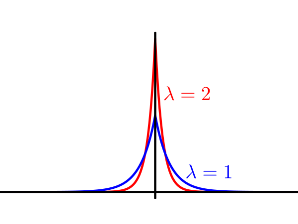
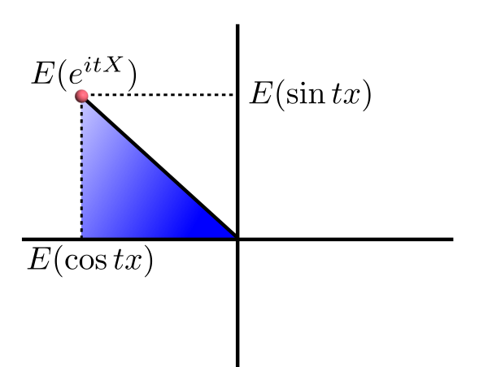

| Last updated on: Wed Sep 23 12:08:44 IST 2026 |
EXAMPLE 1: Find the CF of the degenerate distribution at $c.$
SOLUTION: Here $X = c $ with probability 1. So $\xi_X(t) = E(e^{it X}) = e^{itc}$ for $t\in{\mathbb R}.$ ■EXAMPLE 2: Find $\xi_X(t)$ if $X\sim Poi(\lambda).$
SOLUTION: Take any $t\in{\mathbb R}.$ Then $$\begin{eqnarray*} \xi_X(t) & = & E(e^{it X})\\ & = & e^{-\lambda} \sum_{k=0}^ \infty e^{itk} \frac{\lambda^k}{k!}\\ & = & e^{-\lambda} \sum_{k=0}^ \infty \frac{(e^{it}\lambda)^k}{k!}\\ = e^{-\lambda} e^{\lambda e^{it}}\\ = e^{\lambda(e^{it}-1)}. \end{eqnarray*}$$ ■EXAMPLE 3: Find the CF of $X$ having density $f(x) = \left\{\begin{array}{ll} 3 e^{-3x}&\text{if }x>0\\ 0&\text{otherwise.}\end{array}\right. $
SOLUTION: $$E(e^{itX}) = 3\int_0^ \infty e^{itx}e^{-3x}\, dx = 3\int_0^\infty e^{(it-3)x}\, dx = \frac{3}{3-it}$$ for $t\in{\mathbb R}.$ ■ There is a "trick" called contour integration which may be used to find integrals of complicated complex functions. While the trick itself is beyond the scope of this course, we shall use the following two results which are easily proved using that trick.Proof:Skipped.[QED]
Proof:Skipped.[QED]
Incidentally, the Cauchy distribution does not have an MGF (as $E(e^{tX})$ does not exist finitely for any value of $t$ except $t=0$).!EXERCISE 1: Find $\xi_X(t)$ if $X\sim Bern(p).$
EXERCISE 2: Find $\xi_X(t)$ if $X\sim Binom(n,p).$
EXERCISE 3: Find CF for the uniform distribution over $(-1,1).$
EXERCISE 4: Find CF for the Double Exponential distribution with rate $\lambda.$ This distribution has a density made by combining two exponential densities back to back (and halving to keep the total integral 1): $$f(x) = \frac \lambda2e^{-\lambda |x|},~~x\in{\mathbb R}.$$
 |
|---|
| Double exponential densities |
Proof:The first one is trivial.
For the second, note that |
|---|
| Apply Pythagoras to the blue triangle |
Proof:Will be done next semester.[QED]
Proof: Since $X,Y$ are independent, hence so are their functions $e^{itX}$ and $e^{itY}.$
Since their expectations are finite, so $E(e^{itX}\times e^{itY}) = E(e^{itX})\times E(e^{itY}).$ Hence the result. [QED] If we know a list of CFs for some standard distributions, then these two results often help us to identify if the convolution[?]EXAMPLE 4: Suppose that you are told that, for $a>0$, the distribution with density $f_a(x) = \left\{\begin{array}{ll}c x^{a-1}e^{-x}&\text{if }x>0\\ 0&\text{otherwise.}\end{array}\right.$ has CF $\xi_a(t) = (1-it)^{-a}$ for $t\in{\mathbb R}.$
Show that for $a,b>0$ we have $f_a* f_b = f_{a+b}.$ SOLUTION: You can of course show this directly using the definition of convolution. But that would require you to compute an integral. But it is trivial using CF: $\xi_a(t)\xi_b(t) = (1-it)^{-a} (1-it)^{-b} = (1-it)^{-(a+b)}$ for $t \in{\mathbb R}.$ Since CF uniquely determines the distribution, we get the result. ■Proof:To show: $$\forall t\in{\mathbb R}~~\forall (t_n)\subseteq {\mathbb R} ~~(t_n\rightarrow t\Rightarrow \xi(t_n)\rightarrow \xi(t)).$$
Take any $t\in{\mathbb R}$ any $(t_n)\subseteq{\mathbb R}$ with $t_n\rightarrow t.$ To show $\xi(t_n)\rightarrow \xi(t),$ i.e., $E(e^{it_n X}) \rightarrow E(e^{it X}).$ Let $Y_n = e^{it_n X}$ and $Y = e^{it X}.$ Then $Y_n\rightarrow Y$ and $|Y_n|,|Y|\leq 1.$ Hence by DCT $E(Y_n)\rightarrow E(Y),$ as required. [QED]EXERCISE 5: Assuming the validity of term-by-term differentiation, suggest how you may find $E(X^n)$ from the characteristic function $\xi(t)$ of $X.$
EXERCISE 6: Let $X$ have CF $\xi_X(t).$ Let $Y = ax+b.$ Find $\xi_Y(t),$ the CF of $Y.$
EXERCISE 7: Let $X,Y$ be iid Cauchy. Let $\alpha\in[0,1]$ be any fixed number. Show that $\alpha X+(1-\alpha)Y\sim$ Cauchy. Hence conclude that if $X_1,...,X_n$ are iid Cauchy, then $\bar X_n\sim$ Cauchy, as well.
Hint:
Express $\bar X_n$ using $\bar X_{n-1}$, $X_n$ and $n.$
EXERCISE 8: Let $X$ be a random variable with characteristic function $\phi(t).$ Let $(a_n),(b_n)$ be two real sequences with $a_n-b_n\rightarrow 0.$ Then show that $\phi(a_n)-\phi(b_n)\rightarrow 0.$
Hint:
Imitate the proof of the continuity theorem above.
EXAMPLE 5: Normal and Cauchy density ■
Proof:See this note.[QED]
Proof:See this note.[QED]
The "if part" of this result may be strenghthened to some extent: If $(\phi_n)$ converges pointswise to some function $\phi$ that is continuous in a neighbourhood of 0, then $\phi$ must be the characteristic function of some random variable $X$ and $X_n\rightarrowD X.$EXERCISE 9: Let $X_n$ be a random variable with characteristic function $\phi_n(t) = \left(1-\frac{it}{n}\right)^{-n}$ for $t\in{\mathbb R}.$ Show that $(X_n)$ converges in distribution. Identify the limiting distribution.
EXERCISE 10: Check the Levy inversion formula for $X\sim Bern\left(\frac 13\right)$ with $a = -1$ and $b=0.$
EXERCISE 11: Check the Fourier inversion formula for $X\sim$ exponential with rate $1.$